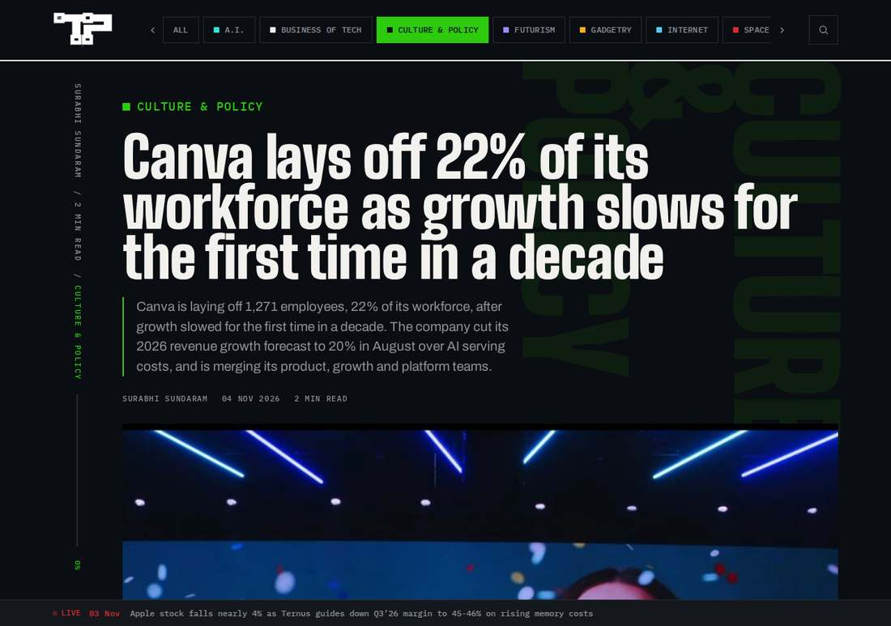

Canva Restructures 22% of Its Workforce as AI Serving Costs Bite: 1,271 Affected, Growth Forecast Cut to 20%
Canva said on November 4 that a restructuring will affect 1,271 people, 22% of its workforce, covering layoffs, role changes and relocations; CEO Melanie Perkins cited growth slowing for the first time in a decade after AI serving costs forced a forecast cut to 20% from 30%.

- 01THE ANNOUNCEMENT — On November 4, 2026, Canva CEO Melanie Perkins told staff a restructuring will affect 1,271 people, 22% of the workforce, covering layoffs, role changes and relocations.
- 02THE CONFIRMATION — TechCrunch and The Tech Portal independently reported the memo the same day, confirming the 1,271 figure, the merged product organisation, the August forecast cut to 20% from 30% over AI costs, and that the memo does not attribute the cuts to AI replacing roles.
- 03THE WATCHPOINT — Whether Canva discloses the layoff versus relocation split, what the November 10 company-wide meeting clarifies, and whether own models such as Canva Craft restore growth against chatbot-generated design competition.
WHAT HAPPENEDWhat Happened
Canva told staff on November 4, 2026 that a restructuring will affect 1,271 people, 22% of its global workforce, CEO Melanie Perkins said in a memo to employees. The figure covers layoffs, role changes and relocations to centralised hubs, implying a pre-restructuring headcount of roughly 5,800. Perkins called it the hardest moment in Canva's 13-year history and said growth has slowed for the first time in a decade, adding that small changes would not be enough.
The reorganisation merges Canva's Product, Growth and Platform groups into a single product organisation, scales back narrow specialisation so roles become broader, and moves the company from remote-first to hybrid, with most hybrid staff expected in an office a few days a week. Departing employees receive at least six months' salary, twelve months of healthcare cover where Canva provides it, and twelve months of employee assistance extended to family members. Conversations with affected staff will be staggered across the 37 countries where Canva has teams, with a company-wide meeting scheduled for November 10.
The AI cost thread runs through the slowdown rather than through a claim that AI replaced the roles. In August 2026 Canva cut its 2026 revenue growth forecast to 20% from 30% after the cost of serving AI features on frontier models ran well above budget. Perkins has said the cost per AI task is down nearly 90% since Canva AI 2.0 launched in April, and the company has begun shipping its own models, including the in-house image model Canva Craft, to reduce reliance on third-party providers. Canva has been free-cash-flow positive for nine years and held $1.47 billion in cash at the end of June.
Competition frames the pressure from the other side. ChatGPT and Gemini can now generate posters and presentations from a prompt, and startups such as Gamma have added image generation aimed at Canva and Adobe. TechCrunch notes Canva's early investors cut its valuation to about $35 billion earlier in 2026; The Tech Portal puts the marks in detail, with Blackbird Ventures and Airtree cutting their marks from $42 billion to $34.9 billion and the valuation used for employee share sales falling from $38.9 billion to $31 billion.
WHY IT MATTERSThe honest reading is cost structure, not a robot replacement story
Two lazy readings are both wrong here, and the reporting itself warns against them. The first is that 1,271 people were all laid off; the disclosed figure bundles exits, role changes and relocations, and the split is undisclosed. The second is that AI took these jobs; Perkins' memo does not say that, and the company's own AI cost curve is moving the other way, down nearly 90% per task since April.
What the memo does say is that serving AI features on frontier models cost far more than budgeted, forcing a forecast cut from 30% to 20% growth, and that the organisation built for a faster-growth chapter no longer fits. The restructuring is therefore better read as an AI-era margin and focus reset at a profitable company, Canva is free-cash-flow positive with $1.47 billion in cash, than as a distress cut or an automation layoff.
WHY IT MATTERSThe test is whether own models and a flatter org restore growth
Canva's answer to the cost problem is vertical: build its own models such as Canva Craft and stop renting frontier capacity at whatever price the market sets. If that holds, the August forecast cut marks the peak of the AI cost shock rather than the start of a structural decline, and the merged product organisation removes the handover friction Perkins cited as a reason for the reorganisation.
The counter-test is the competitive one. General-purpose chatbots now do a usable version of Canva's core job from a prompt, and the November 10 company-wide meeting plus the staggered country-by-country conversations will show whether the 22% figure settles as mostly relocation and redefinition or mostly exits. Until Canva discloses the split, any headline that calls all 1,271 people laid off overstates what is known.
SIGNAL JUDGMENT — ANALYSISAn AI cost reset at a profitable company, not an automation layoff
Tokenta Signal's judgment: Canva's restructure matters because it separates two stories that are usually blurred. The company is not cutting because AI replaced its people, its own memo does not say that, and it is not cutting from distress, it holds $1.47 billion in cash. It is cutting because renting frontier AI capacity cost far more than budgeted and the organisation built for 30% growth no longer fits 20%. The watchpoint is the undisclosed split inside the 1,271, and whether own models plus a flatter org restore growth before chatbot-generated design eats further into the core product.
WHAT REMAINS UNCERTAINWhat Remains Uncertain
EVIDENCEEvidence

TechCrunch's November 4, 2026 report, opened and verified directly, confirms Canva is cutting 22% of staff amounting to 1,271 people, CEO Melanie Perkins' memo describing growth slowed for the first time in a decade, the merged product organisation, and the revenue forecast cut to 20% from 30% to address ballooning AI costs; The Tech Portal's same-day report independently confirms the 1,271 figure covers layoffs, role changes and relocations, and that the memo does not attribute the cuts to AI replacing roles.
PRIMARY SOURCESPrimary Sources
- TechCrunch: Canva lays off over 1,200 people amid slowing growth
https://techcrunch.com/2026/11/04/canva-lays-off-over-1200-people-amid-slowing-growth/ - The Tech Portal: Canva lays off 22% of its workforce as growth slows for the first time in a decade
https://thetechportal.com/2026/11/04/canva-lays-off-22-of-its-workforce-as-growth-slows-for-the-first-time-in-a-decade/
RELATEDRelated Intelligence
- GlobalFoundries Posts Record 31.4% Margin as AI Packaging Deals Stack Up: $2B TSMC Pact, $21B U.S.-Japan Fabs
- Lambda Pledges $33.1 Billion for Alabama AI Campus, Revealing Itself as Project Red Clay's Tenant
- Kimi K3.1 Pro Weights Land on Hugging Face, Closing Moonshot's November 4 Promise
- Google Pledges $15 Billion for Malaysia Data Centers, With Clean Energy and Skills Attached